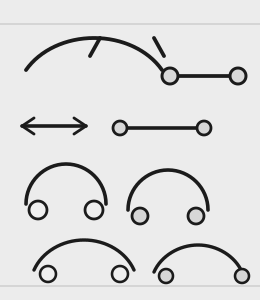
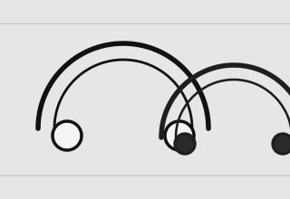

ritual 01 / copia maestra
RITO NEGRO
hierro, tinta, presión y una ceremonia breve contra la piel.
impreso / velado / consagrado
liturgia xerox / sombra impresa / ruido en movimiento
Una landing page de ejemplo para un estudio de piercing ficticio, tratada como panfleto ritual: tipografía ceremonial, papel herido, fotocopias superpuestas y símbolos que parecen salir de un grimorio reimpreso mil veces.
manifiesto de la casa
[ artículo / zine / página arrancada ]
Nocturna se presenta como si la hubieran compuesto entre tijeras, cinta, tóner y superstición. El blanco nunca es puro. El negro nunca descansa.
Cada bloque editorial se apoya en una grilla rota, con márgenes falsos, rotaciones mínimas y paneles que se pisan entre sí como si fueran recortes pegados de madrugada. Acá no se busca simetría impecable.
El resultado tiene que sentirse como una mezcla de fanzine, afiche ceremonial y página de grimorio moderno: brutal, ceremonial, fotocopiado, lleno de huellas y, aun así, legible.
collage visual


Nota: estas imágenes son ejemplos mal hechos a propósito. No están pensadas para estética final, sino para mostrar: "ahí puedo poner tu producto".
elementos simbólicos
diagrama / órbita / invocación
símbolos activos
lectura
Estos signos no explican nada del todo. Solo empujan la atmósfera: archivo secreto, liturgia gráfica y una precisión que parece superstición.
señalamiento
resumen de la página
[ resumen / demo / landing ]
El sitio combina una portada dramática, un manifiesto tipo zine, un collage monocromo y un tablero simbólico para mostrar una dirección visual fuerte.
Todo está construido con HTML, CSS y JavaScript vanilla, sin dependencias externas, con estructura adaptable y funcionamiento offline.